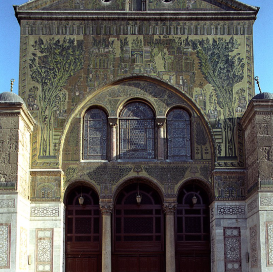
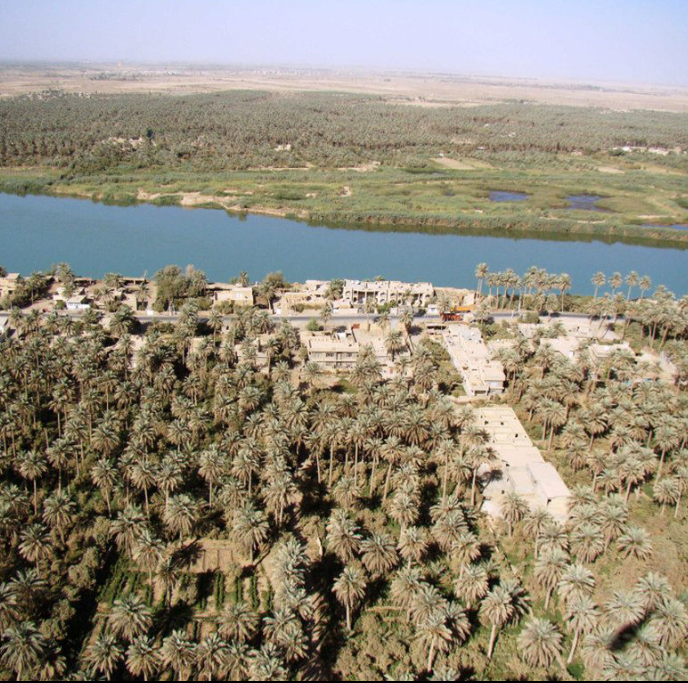

| Country | Capital | Population | Image |
|---|---|---|---|
| Jordan | Amman | 11M | |
| Palestine | Al-Quds | 11.6M | |
| Egypt | Cairo | 109.3M | |
| Syria | Damascus | 21.3M |  |
| Iraq | Baghdad | 43.5M |  |
I like to start making the tabouleh by mixing the dressing. It’s made up of two ingredients: olive oil and lemon juice – easy enough! I whisk those together until well blended, and then let the flavor settle while I chop the vegetables.
One important tip I learned though from my mother-in-law is to add the bulgur to the dressing while preparing the vegetables. This allows the bulgur to absorb some of the liquid and soften – making it easier to chew it in the salad. I used to soak it in water, but I prefer this method because there’s no risk of watering down the flavor. You’ll slowly start to see the bulgur get plump.
While the bulgur is soaking, prepare yourself for some mad chopping. Tabbouleh requires a lot of chopping – it’s really a labor of love.
That includes a bunch (well, technically 2 bunches) of parsley, tomatoes, and green onions. Some people use a food processor to chop the parsley. But I find that it can sometimes lead to wilted chopped parsley. So I always use a large chef’s knife, and it does the trick.
When you’re done chopping, transfer the bulgur and dressing mixture over the chopped vegetables and gently mix everything together.
And that’s basically the tabbouleh salad recipe! And it might be the best tabbouleh recipe you’ll ever have!